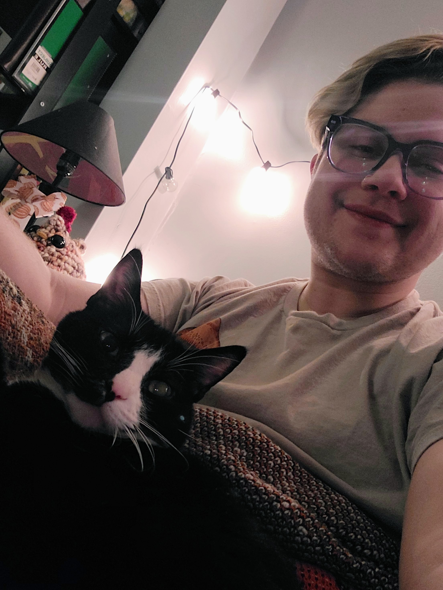

Oliver Jarjosa

This is a photo of me and my 8 year old cat, Jellybean.
History
- 1997: I was born on November 13 in Hamilton, OH.
- 2004: My brother was born the day after my 7th birthday.
- 2009: Was diagnosed with an autoimmune disease at the age of 12.
- 2016: Graduated from high school.
- 2018: Became engaged to my significant other.
- 2019: Moved back to Cincinnati, OH.
- 2021: Graduated with a BA of Psychology from the University of Cincinnati.
- 2024: Became a student at Kable Academy.
Linkedin
Jobs
Education